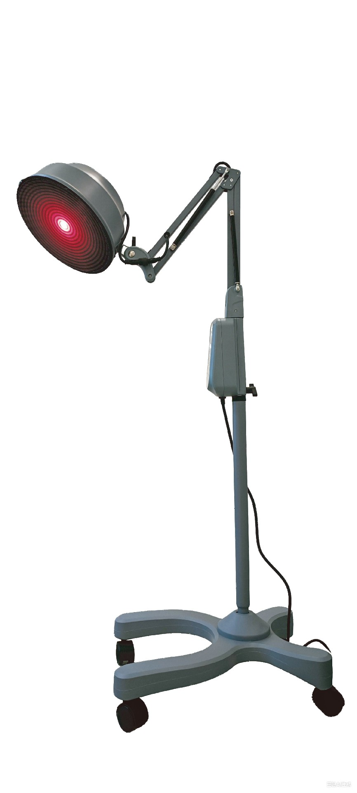
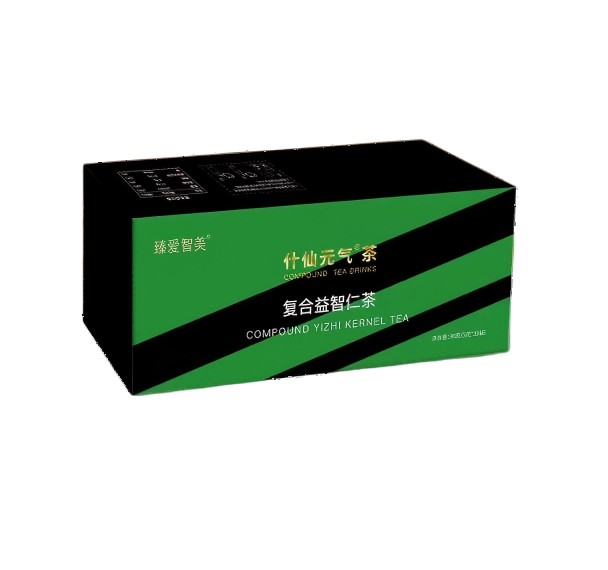
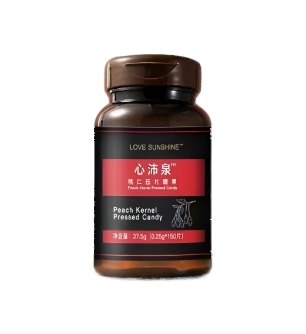
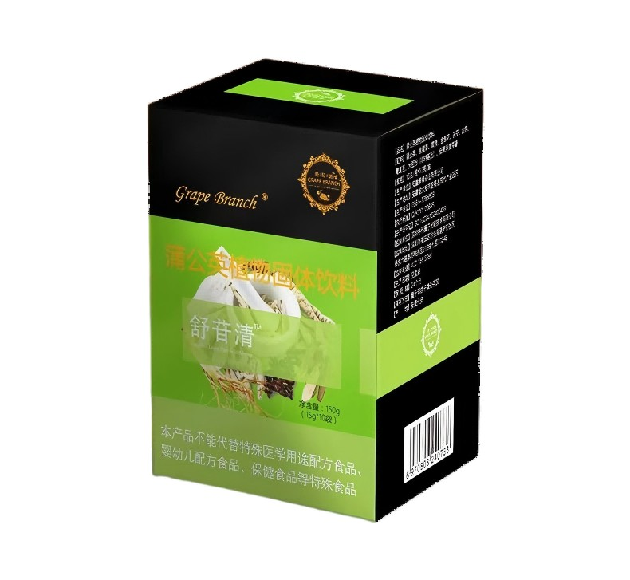
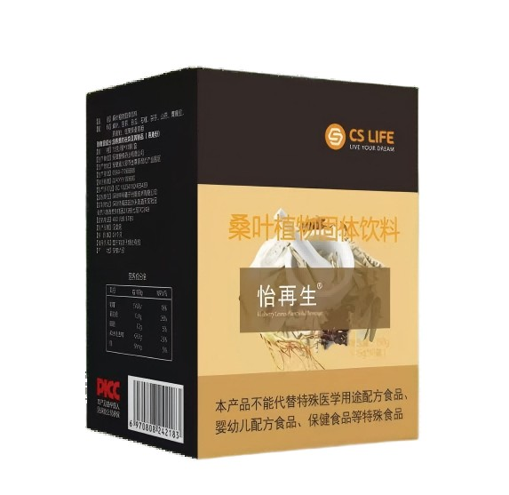
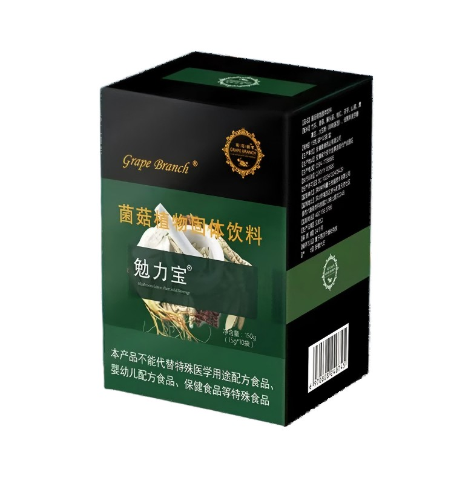
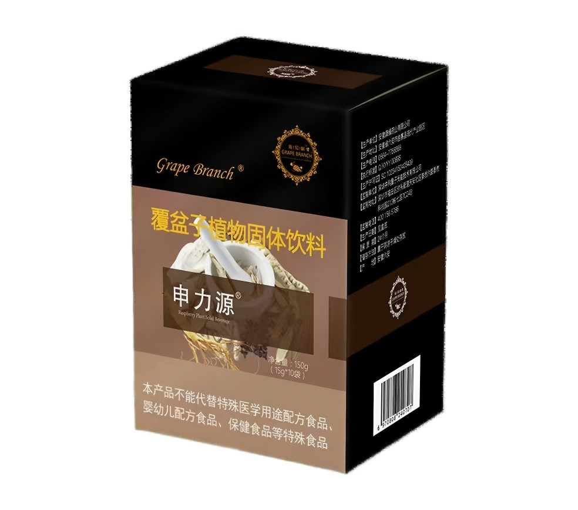
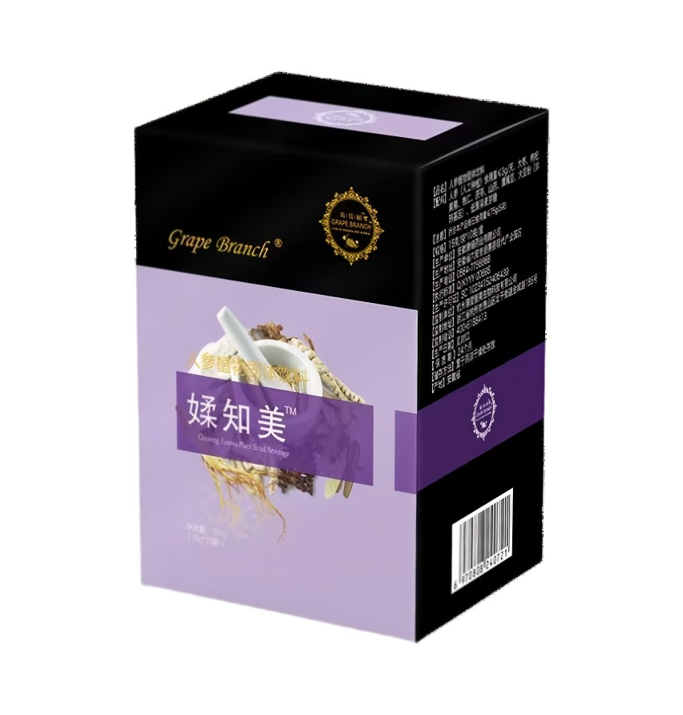

产品与服务
应象堂秉承传统中医养生理念，结合现代健康需求，为您提供全方位的中医养生服务与优质草本产品。
一、外调扶阳·天灸仪 查看详情

精准模拟太阳光有益波段，无需复杂操作，轻松实现外调养生，兼顾美丽与健康：
- 增强人体代谢，加速循环，改善身体机能
- 补充人体阳气，驱散体内寒湿，缓解体寒不适
- 辅助燃烧脂肪，紧致体态，塑造健康曲线
- 温和养护肌肤，由内而外焕发光彩，晒出健康好气色
二、内服滋阴·元气茶 查看详情

主打内服滋养，温和调理，适配日常饮用，轻松补足身体能量：
规格：
3g/袋* 10袋*3小盒
配料：
配方源自5500年前的 "神农饮 "。
益智仁、 决明子、 菊花、 山楂、 白茅根、 薏苡仁、 甘草
作用：
- 补足元气： 夜尿减少， 漏尿消失， 睡眠改善， 食量减少 （气足不思食） 。
- 补足水分： 面部水润饱满， 手指肚有弹性， 血液不黏稠。
- 促进代谢： 分解脂肪， 改善脂肪肝、 高血脂， 降脂减肥。
- 排解毒素： 排毒就是脱瘾， 烟瘾、 酒瘾、 肉瘾变小。
- 清肝明目： 解酒护肝， 改善视力。
- 二便通畅： 使胃气降浊， 祛湿利水通二便。
- 改变酸性体质： 免疫力提升， 精气神变好， 疲劳感消失 。
三、五行调理·内服代餐粉
药食同源配方，非药用，持有正规食品证明，针对性调理人体心肝脾肺肾，适配日常代餐、温和养护，无负担：
1.心沛泉（调心）
查看详情
通达血脉，滋养心肌，助力心脑血管健康，改善气血运行不畅。
规格：
0.25g/片* 150片
配料：
桃仁、 沙棘、 红曲米、 山楂、 酸枣仁、 异麦芽酮糖醇。
作用：
- 活血祛瘀， 增强血流量， 抑制血液凝集， 促进血液循环 。
- 改善心肌供血， 改善胸痹心痛， 心悸， 心率不齐。
- 改善脑供血， 增强记忆力， 预防老年痴呆。
- 改善头晕、 胸闷、 心悸、 气短、 乏力。
- 降低血液黏稠度、 平衡血压、 降低胆固醇。
- 镇静安眠， 宁心安神， 帮助入睡， 舒解紧张焦虑 。
- 行气散瘀， 改善闭经痛经、 产后恶露瘀阻。
2.舒苷清（调肝）
查看详情
清肝利胆，辅助降脂解毒，减轻肝脏负担，助力肝功能修复与养护。
规格：
15g/袋* 10袋
配料：
蒲公英、 鱼腥草、 黄精、 金银花、 茯苓、 山药、 鹰嘴豆、 大豆粉 （非转基因） 、 低聚异麦芽糖。
作用：
- 改善肝功能， 修复肝损伤， 改善肝炎， 脂肪肝。
- 清肝利胆明目， 改善视力， 祛除眼疾。
- 清热解毒、 利尿通淋。
- 消肿散结、 消除疔疮肿毒， 乳痈， 肺痈， 肠痈， 黄疸。
- 改善情绪， 调整血压， 改善暴怒， 防止抑郁。
- 抗动脉硬化、 抗脑缺血、 抑制血小板聚集。
3.怡再生（调脾）
查看详情
调养脾胃，改善消化吸收，辅助修复胰岛功能，适配脾胃虚弱人群。
规格：
15g/袋* 10袋
配料：
桑叶、 苦荞、 苦瓜、 石榴、 茯苓、 山药、 鹰嘴豆、 大豆粉 （非转基因） 、 低聚异麦芽糖。
作用：
- 调理脾胃， 改善脾胃虚寒不适。
- 降中焦燥热， 修复胰脏， 改善胰岛功能 。
- 利尿活血、 消炎退热、 清心 明目。
- 改善糖代谢及脂代谢， 防止脂肪在体内堆积 。
- 改善血管弹性， 修复毛细血管。
4.勉力宝（调肺）
查看详情
润肺去燥，缓解肺燥不适，增强呼吸道防护，提升身体免疫机能。
规格：
15g/袋* 10袋
配料：
竹荪、 香菇、 猴头菇、 菊苣、 茯苓、 山药、 鹰嘴豆、 大豆粉 （非转基因） 、 低聚异麦芽糖。
作用：
- 祛风散热、 清热解毒、 补气扶正。
- 增强免疫， 双向调节免疫机能。
- 预防流感、 抗病毒、 抗感染。
- 抗炎、 抗过敏、 改善寻麻疹。
- 对抗蛇虫叮咬。
5.申力源（调肾）
查看详情
补中益气，养肾固本，滋养肾精，强健筋骨，改善腰膝酸软。
规格：
15g/袋* 10袋
配料：
覆盆子、 玛咖、 枸杞、 黄精、 桃仁、 山楂、 茯苓、 山药、 鹰嘴豆、 大豆粉 （非转基因） 、 低聚异麦芽糖。
作用：
- 补肾助阳， 改善男性阳痿、 早泄。
- 补气养阴， 改善女性月经不调、 闭经等。
- 固本培元， 改善耳鸣耳背， 改善脑供血及帕金森 。
- 缩尿调经， 改善夜尿、 尿频、 尿急、 漏尿。
- 提高精子活力， 改善不孕不育。
- 强健骨骼， 牙齿健康， 促进孩子长个， 预防骨质疏松。
6.媃知美（调宫巢）
查看详情
滋养女性宫巢，调理内分泌，改善气血，由内而外散发女性独特魅力。
规格：
15g/袋* 10袋
配料：
人参、 大枣、 枸杞、 黄精、 桃仁、 茯苓、 山药、 鹰嘴豆、 大豆粉 （非转基因） 、 低聚异麦芽糖。
作用：
- 专为女性设计， 滋养卵巢子宫， 逆龄抗衰。
- 大补元气， 改善元气亏虚、 神疲乏力、 脉细欲绝 。
- 改善月经不调、 痛经、 更年期、 腺肌症。
- 保持女性身材姣好， 容颜不老， 瘦腰丰胸提臀 。
- 强化心脏功能， 抗心肌缺血缺氧。
- 改善女性的激素水平， 心情愉悦。
四、产品搭配方案 查看详情
结合产品特性，推出3种科学搭配方案，适配不同养生需求，兼顾便捷性与调理效果：
基础方案：天灸仪+元气茶
外调扶阳、内服滋阴，双向调理达到阴阳平衡，温和无负担，适合长期日常养生使用。
进阶方案：天灸仪+元气茶+心沛泉
外补阳气、内滋元气，搭配心沛泉通达血脉，可迅速缓解身体疲劳，提振阳气，改善精神不振。
深度定制方案：天灸仪+元气茶+五行产品
外调内养结合，针对性调理人体不同脏腑，精准改善各类慢性不适，适配有针对性养生需求的人群。